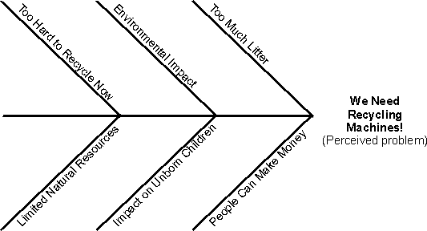

|
The fishbone diagram is one method for finding the "root cause" of a problem. Each "spine" in a fishbone represents a
contributing cause to the problem.
Once you have defined the root causes, you should prioritize which one contributes the most to the problem. Typically,
the 80-20 rule applies, meaning 20 percent of the root causes contribute to 80 percent of the problem.
Once you have identified 20 percent of the root causes, it is often helpful if you build other spines to better
understand how you can address these causes.

Example of a fishbone diagram for a Recycling Machine system.
|